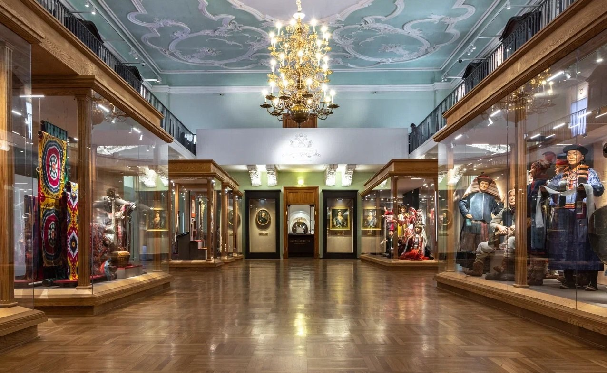
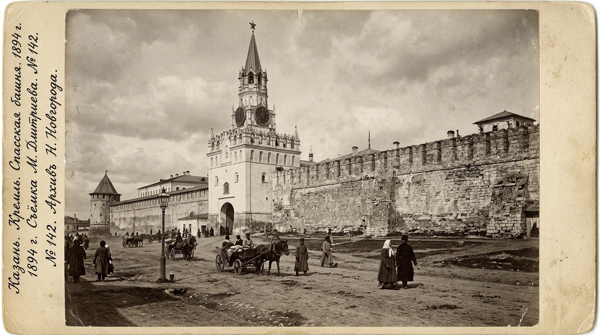
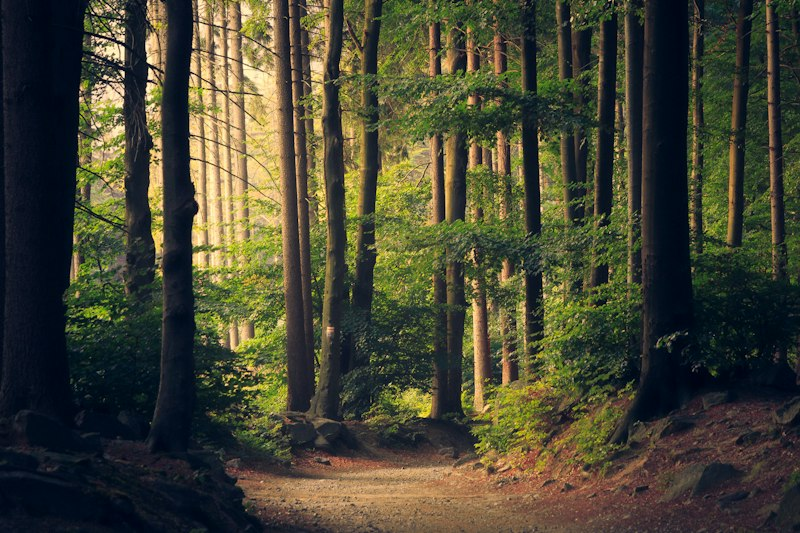
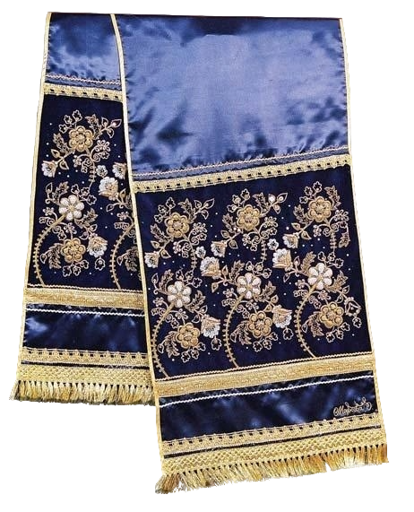
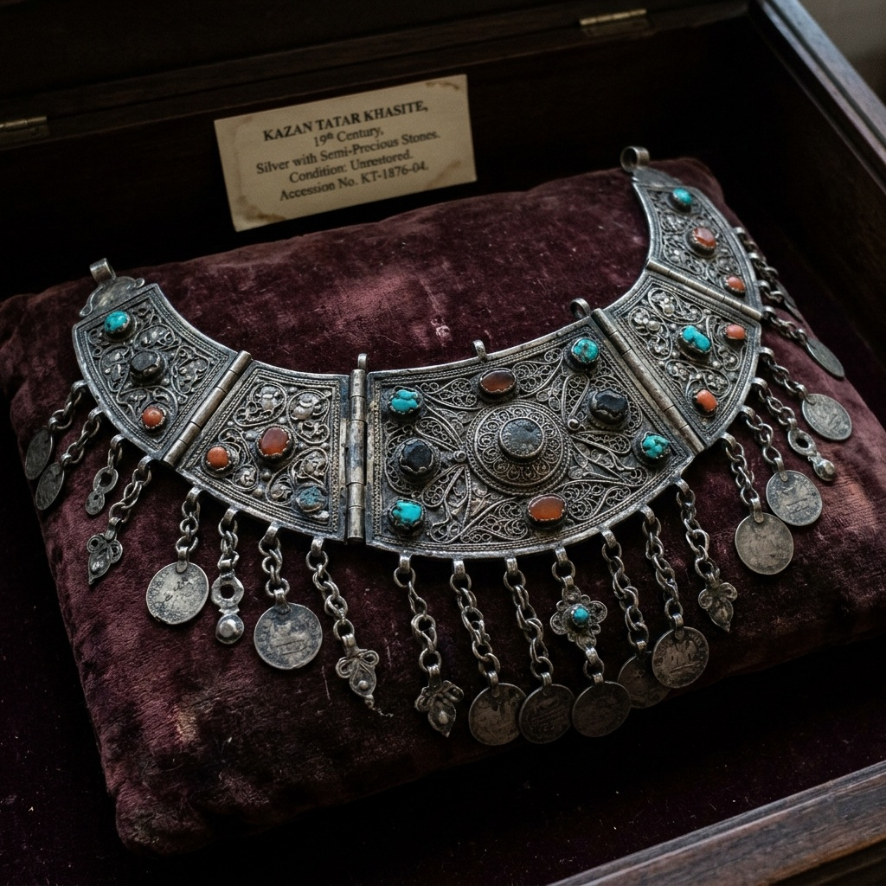
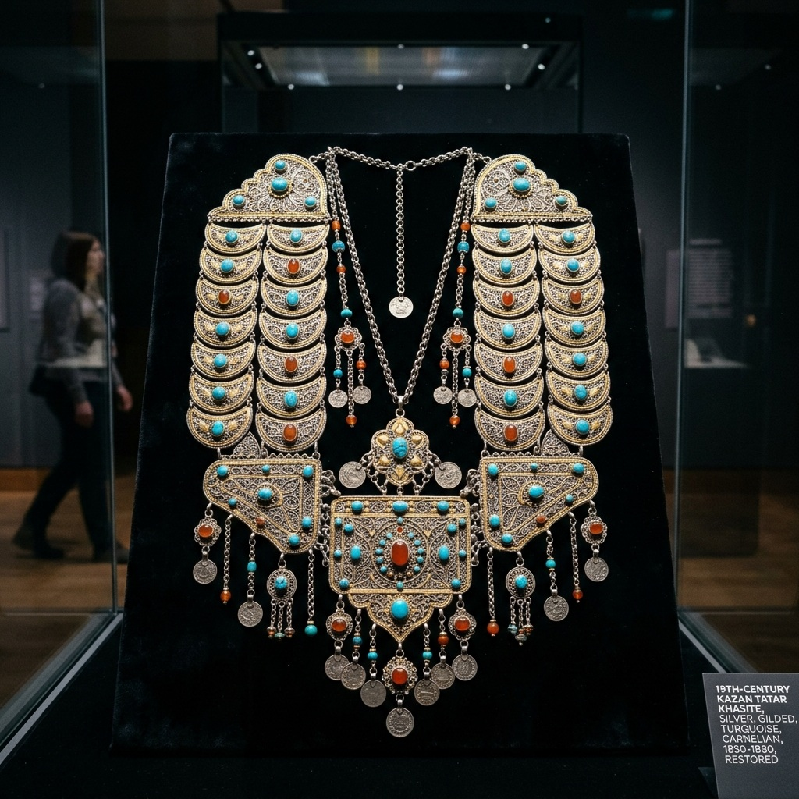

Интерактивное погружение в мифологию, орнаменты и сакральное искусство народов России и мира: от древних легенд до реальных визитов в главные музеи страны.

Перекрёсток цивилизаций Востока и Запада, великое наследие Волжской Булгарии, виртуозная кожаная мозаика и поэзия древнего урмана.
«Исәнмесез! Рәхим итегез!»


Вход под сень векового дубового леса. Молодой дровосек замечает таинственные метки на коре деревьев.
В архаических тюрко-булгарских верованиях Шурале — не просто леший, а строгий страж баланса первозданной природы («урмана»). По поэме Габдуллы Тукая, молодой дровосек перехитрил духа, защемив его пальцы в клине дубового бревна и назвавшись «Былтыр» («В прошлом году»).
Перед вами подлинный памятник традиционного мастерства. Используйте сенсорную лупу, чтобы изучить фрагменты ткани и идентифицировать канонический элемент узора.

✦ Водите пальцем или курсором по холсту для фиксации сакрального фрагмента (удерживайте 1 сек)
Шедевр казанского узорного сафьянного шитья (ичижного шва). Ступенчатый ромб и расцветающий тюльпан.
Вращайте экспонат свайпом пальца или ползунком ракурса. Исследуйте глубину шва, сафьяновую кожу и растительные пигменты.
Цифровое путешествие завершается встречей с настоящим историческим артефактом в зале одного из ведущих музеев.
След разгадан! Артефакт сохранён в вашей витрине наград.
Исследуйте карту культурных ареалов. Выберите маркер региона, чтобы изучить полевой паспорт экспедиции, услышать живую речь коренных народов и открыть доступ к сакральным музейным реликвиям.
Перекрёсток цивилизаций Востока и Запада, великое наследие Волжской Булгарии, виртуозная кожаная мозаика и поэзия древнего урмана.
Интерактивное исследование сакральных экспонатов: оптическая деконволюция, мультиспектральный анализ (UV 365 nm / X-Ray / IR 950 nm) и обратимая цифровая реконструкция музейных утрат.


Естественный видимый свет (RGB). Спектр 380–740 нм. Фотограмметрическая реконструкция текстуры бархата и серебряной скани.
0.0 – 0.6 мм: Оксидная патина, микрозагрязнения и следы минерализации веков.
Шестигранный футляр для молитвенного свитка, украшенный филигранью и бирюзовым кабошоном. Нейросеть удалила оксидную пленку и восстановила утраченные подвески.
Исследуйте древнейшую наскальную эпиграфику Евразии в реальном времени. Перемещайте интерактивную линзу нейросканера по поверхности древнего камня: алгоритмы компьютерного зрения выделяют скрытые линии высечки, анализируют глубину рельефа и расшифровывают сакральный смысл знаков.
Горный Алтай (Чуйский тракт) · ок. 1800 г. до н.э.
Олень в наскальном искусстве Алтая символизировал связь земного мира с небесным сводом, Мировое Древо и солнечный круговорот жизни.
Собрание сказов, былин и космогонических мифов, записанных выдающимися этнографами в экспедициях XIX–XX веков.
Сформируйте подлинный сакральный оберег на основе этнографических мотивов народов России. Процедурный генератор синтезирует вековую геометрию, розеточную симметрию и родовые знаки защиты.
Символизирует весеннее обновление рода, защиту домашнего очага и несокрушимую выдержку в дальних дорогах.
Восьмилучевая циклическая симметрия. Древнейший индоевропейский и тюркский солярный знак: защита очага от злых духов и благословение весеннего солнца.